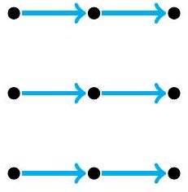
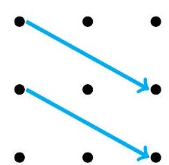
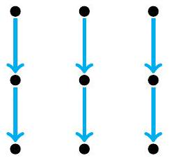
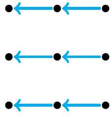
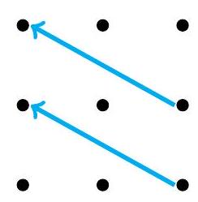
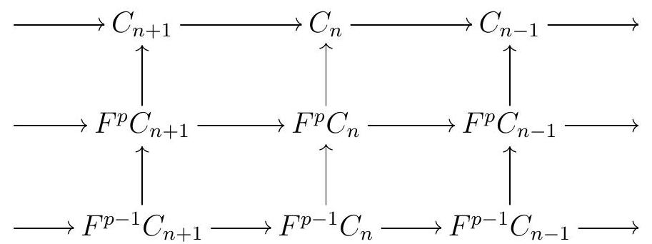

It has been suggested that the name "spectral" was given because, like spectres, spectral sequences are terrifying, evil, and dangerous. I have heard no one disagree with this interpretation, which is perhaps not surprising since I just made it up.
―Ravi Vakil, in Spectral Sequences: friend or foe?
Spectral sequences are useful bookkeeping tools for computing, among other things, the homology and cohomology of complicated complexes. Unfortunately, spectral sequences have a bad reputation for being difficult and scary; but continuing Vakil’s quote above, "you can use spectral sequences without hesitation or fear, and [...] you shouldn’t be frightened when they come up in a seminar". Rotman wisely says that "Of course, the reader must digest these new ideas in order to apply them, but it is worth the effort" [Rot09, page 608].
Spectral sequences were introduced independently by Leray and Lyndon in the 1940s. Leray came up with the idea while he was a prisoner of the nazis during WWII. The primary usages of spectral sequences are in homotopy theory and topology more generally, but there are also applications in commutative algebra and other fields. Due to its topological roots, the subject is best learned with a topological backdrop - which provides many motivating examples - but since we are not assuming any particular topological background, we will give only a very brief introduction to the subject, and from a more algebraic perspective.
Here are some recommended sources to learn more about spectral sequences:
Rotman’s book An introduction to Homological Algebra (second edition) [Rot09].
John McCleary’s A user’s guide to spectral sequences [McC01].
Ravi Vakil’s notes Spectral Sequences: friend or foe?
Hatcher’s additional chapter on spectral sequences, an addition to his Algebraic Topology book [Hat02].
Weibel’s book An introduction to homological algebra [Wei94].
Eisenbud’s Appendix A3.13 to his book Commutative algebra with a view towards algebraic geometry [Eis95].
Mel Hochster’s notes.
Michael Hutchings notes.
Roughly speaking, a spectral sequence is a book where each page is a plane with a module (or more general, an object in an abelian category) sitting in each point with integer coordinates. To pass the pages, we take the (co)homology of a differential, and attach to the next page a new differential with a different shape.
Definition7.1.
A cohomological spectral sequence \(E\) consists of the following data:
A family \(E=\left(E_{r}^{p, q}\right)\) of \(R\)-modules ranging over all integers \(p, q, r\) with \(r \geqslant 0\text{.}\) For a fixed \(r\text{,}\) the collection of modules \(E_{r}=E_{r}^{p, q}\) is called the \(r\) th page or sheet of the spectral sequence. We think of each page as living in \(\mathbb{Z}^{2}\text{,}\) and depict the \(r\) th page by putting \(E_{r}^{p, q}\) in the point with coordinates \((p, q)\) :
Remark 8.2. The differential in the \(r\) th page is a map of degree \((r,-r+1)\text{.}\) Here are some examples:
0th page

1st page

2nd page
We can define spectral sequences more generally over any abelian category. However, most spectral sequences the typical mathematician ever computes are over \(R\)-modules (or even just vector spaces!), so we will keep things friendly by sticking to \(R\)-modules.
Definition7.3.
A homological spectral sequence \(E\) is a sequence consists of the following data:
A family \(E=\left(E_{p, q}^{r}\right)\) of \(R\)-modules ranging over all integers \(p, q, r\) with \(r \geqslant 0\text{.}\) For a fixed \(r\text{,}\) the collection of objects \(E_{r}=E_{r}^{p, q}\) is called the \(r\) th page or sheet of the spectral sequence. We think of each page as living in \(\mathbb{Z}^{2}\text{,}\) and depict the \(r\) th page by putting \(E_{r}^{p, q}\) in the point with coordinates \((p, q)\) :
Remark 8.4. The differential in the \(r\) th page is a map of degree \((-r, r-1)\text{.}\)

0th page

1st page

2nd page
SubsectionGraded and Bigraded Modules
We can be a bit more formal and say that a page in a spectral sequence is a differential bigraded module. The goal of this section is to set up some background on the topic of differential bigraded modules.
Definition7.5.
Definition 8.5. Let \(R\) be a ring. A graded module over \(R\) is a family \(M=\left(M_{n}\right)_{n \in \mathbb{Z}}\) of \(R\)-modules indexed by \(\mathbb{Z}\text{.}\) We sometimes denote \(M\) by \(M_{\bullet}\text{.}\)
More precisely, these are \(\mathbb{Z}\)-graded modules. More generally, we have discussed \(\mathbb{Z}\)-graded modules over any graded ring; in that case, the action of \(R\) on \(M\) must respect the grading. But here we are not assuming any grading on \(R\text{,}\) so we have no such conditions. One may reinterpret our definition of graded module as assuming that \(R\) is given the trivial grading concentrated in degree 0, so that \(R_{0}=R\) and \(R_{i}=0\) otherwise, and thus the condition on the action of \(R\) becomes trivial.
Example7.6.
Example 8.6. If \(C\) is a complex of \(R\)-modules, then \(\left(C_{n}\right)_{n \in \mathbb{Z}}\) is a graded module. Moreover, its homology \(H=\left(H_{n}(C)\right)\) also forms a graded module.
Definition7.7.
Definition 8.7. Given graded modules \(M\) and \(N\text{,}\) a graded map of degree \(d\) is a family
of homomorphisms of \(R\)-modules, which we denote by \(f: M \rightarrow N\text{.}\) We write \(\operatorname{deg}(f)=d\) to denote that the degree \(f\) is \(d\text{.}\)
Example7.8.Example 8.8..
If \(C\) is a complex of \(R\)-modules, the differential \(d\) is a graded map \(d: C \rightarrow C\) of degree -1 . If \(C\) is a cochain complex, the differential is a graded map of degree 1 .
Any map of complexes \(f: C \rightarrow D\) is a graded map of degree 0 .
A homotopy is a map of degree 1 .
Definition7.9.
Definition 8.9. Let \(R\) be a ring. The category of graded modules over \(R\) has objects all graded modules and arrows all graded maps of graded modules over \(R\text{.}\)
Definition7.10.
Definition 8.10. Let \(M\) and \(N\) be graded modules over a \(\operatorname{ring} R\text{.}\) We say \(N\) is a submodule of \(M\text{,}\) and write \(N \subseteq M\text{,}\) if \(N_{n} \subseteq M_{n}\) for all \(n\text{.}\) The quotient of \(M\) by \(N\) is the graded module
\begin{equation*}
M / N:=\left(M_{n} / N_{n}\right)_{n}
\end{equation*}
Definition7.11.
Definition 8.11. Let \(f: M \rightarrow N\) be a graded map of degree \(d\) between graded modules. The kernel of \(f\) is the graded module
Definition 8.12. Consider graded maps of graded modules
\begin{equation*}
A \stackrel{f}{\longrightarrow} B \stackrel{g}{\longrightarrow} C
\end{equation*}
We say this is an exact sequence if \(\operatorname{im} f=\operatorname{ker} g\text{.}\)
Remark7.13.
Remark 8.13. By our definition of kernel and image, \(\operatorname{im} f=\operatorname{ker} g\) says that \(\operatorname{im} f_{n-d}=\operatorname{ker} g_{n}\) for all \(n\text{.}\)
Definition7.14.
Definition 8.14. Let \(R\) be a ring. A bigraded module over \(R\) is a family \(M=\left(M_{p, q}\right)_{p, q \in \mathbb{Z}}\) of \(R\)-modules indexed by \(\mathbb{Z} \times \mathbb{Z}\text{.}\) We sometimes denote \(M\) by \(M_{\bullet, \bullet}\text{.}\)
Definition7.15.
Definition 8.15. Let \(M\) and \(N\) be bigraded modules over a ring \(R\text{.}\) A bigraded map \(f: M \rightarrow N\) of degree \((a, b)\) is a family of homomorphisms of \(R\)-modules
\begin{equation*}
A \stackrel{f}{\longrightarrow} B \xrightarrow{g} C
\end{equation*}
is exact if \(\operatorname{im} f=\operatorname{ker} g\text{.}\)
Definition7.16.
Definition 8.16. A differential (bi)graded module \((M, d)\) over a ring \(R\) consists of a (bi)graded module \(M\) and a graded map \(d: M \rightarrow M\text{,}\) which we call the differential, such that \(d d=0\text{.}\)
We can think of (bi)graded modules as differential (bi)graded modules with zero differential.
Example7.17.
Example 8.17. A double complex \(C\) with differentials \(d^{h}\) and \(d^{v}\) gives rise to two differential bigraded complexes: \(\left(C, d^{h}\right)\) and \(\left(C, d^{v}\right)\text{.}\)
Definition7.18.
Definition 8.18. Let \((M, d)\) be a differential (bi)graded module. The homology of \(M\) is the (bi)graded module
\begin{equation*}
\mathrm{H}(M, d)=\operatorname{ker} d / \operatorname{im} d
\end{equation*}
We sometimes shorten this to \(\mathrm{H}(M)\text{.}\)
A spectral sequence can now be recast as a sequence \(\left(E^{r}, d^{r}\right)\) of differential bigraded modules such that \(E^{r+1}=\mathrm{H}\left(E^{r}, d^{r}\right)\text{.}\)
SubsectionFiltrations
Definition7.19.
Definition 8.19. Let \(M\) be an \(R\)-module. A filtration \(F^{\bullet} M\) on \(M\) is a family \(\left(F^{p} M\right)_{p \in \mathbb{Z}}\) of submodules of \(M\) such that either
\begin{equation*}
F^{p} M \subseteq F^{p+1} M
\end{equation*}
for all \(p\text{,}\) in which case we say the filtration is increasing, or
\begin{equation*}
F^{p} M \subseteq F^{p-1} M
\end{equation*}
for all \(p\text{,}\) in which case we say the filtration is decreasing. When we do not specify if a filtration is ascending or descending, we will assume by default that it is ascending, though we accept both kinds as filtrations in their own right. The factors of \(F^{\bullet}\) are the quotient modules
\begin{equation*}
F^{p} M / F^{p-1} M
\end{equation*}
One can in fact define filtrations on any abelian category; that requires the notion of a subobject, which we have not yet defined, but it is easy to guess: a suboject of an object \(x\) in an abelian category \(\mathcal{A}\) is a mono with target \(x\text{.}\) In particular, we can define a filtration on a complex, or more generally on a (differential) (bi)graded module:
Definition7.20.
Definition 8.20. An ascending filtration on a (bi)graded module \(M\) is a sequence \(F^{p} M\) of submodules of \(M\) such that \(F^{p} M \subseteq F^{p+1} M\text{.}\) If \(M\) is a differential (bi)graded module, we require additionally that the filtration respects the differential, that is, that \(d\left(F^{p} M\right) \subseteq F^{p} M\text{.}\)
So in particular when \(C\) is a complex, we get the following definition:
Definition7.21.
Definition 8.21. Let \(C\) be a complex. An ascending filtration \(F^{\bullet} C\) of \(C\) is an ascending chain of subcomplexes \(F^{p} C\) of \(C\)
\begin{equation*}
\cdots \subseteq F^{p-1} C \subseteq F^{p} C \subseteq F^{p+1} C \subseteq \cdots
\end{equation*}
We call a complex \((C, \partial)\) with a filtration \(F\) a filtered complex, and denote it by \((C, \partial, F)\text{.}\)
As above, one can define a descending filtration; if we do not indicate whether a filtration is ascending or descending, we will always by default assume it is ascending.
Remark7.22.
Remark 8.22. Let \(C\) be a complex and consider an ascending filtration \(F_{\bullet} C\) of \(C\text{.}\) For each fixed homological degree \(n\text{,}\) we get an ascending filtration
of submodules of \(C_{n}\text{.}\) A filtration of \(C\) gives us commutative diagrams

where the rows are given by the differential on \(C\) and its restrictions to the appropriate modules.
Definition7.23.
Definition 8.23. Let \(C\) be a complex with a filtration \(F^{\bullet} C\text{,}\) and consider the inclusions \(i_{p}: F^{p} C \rightarrow C\text{.}\) We get an induced filtration in homology, as follows: for each \(n\text{,}\)
giving us a filtration \(F^{\bullet} \mathrm{H}(C)\) on the graded module \(\mathrm{H}(C)\text{.}\)
Definition7.24.
Definition 8.24. A filtration \(F^{\bullet} M\) of a graded module \(M\) is bounded if for each \(n\) there exists integers \(s=s(n)\) and \(t=t(n)\) such that
In particular, \(F^{i} M_{n}=0\) for all \(i<s\) and \(F^{i} M_{n}=M_{n}\) for all \(i>t\text{.}\)
Notice, however, that the bounds \(s\) and \(t\) may depend on \(n\text{,}\) and in particular there is not necessarily global integers \(s\) and \(t\) such that
Remark 8.25. Suppose that \(F^{\bullet} M\) is a bounded filtration on a complex \(C\text{.}\) Then the induced filtration in homology is also bounded, with the same bounds (or better), so that for all \(n\) there exist \(s\) and \(t\) such that
Definition 8.26. Let \(M\) be a module or a graded module. Given an increasing filtration \(F\) of \(M\text{,}\) its associated graded module is the graded module \(\operatorname{gr}_{F}(M)\) given by
\begin{equation*}
\operatorname{gr}_{F}(M):=\left(F^{n} M / F^{n-1} M\right)_{n \in \mathbb{Z}}
\end{equation*}
Given a decreasing filtration \(F\) of an \(R\)-module \(M\text{,}\) its associated graded module is the graded module \(\operatorname{gr}_{F}(M)\) given by
\begin{equation*}
\operatorname{gr}_{F}(M):=\left(F^{n} M / F^{n+1} M\right)_{n \in \mathbb{Z}}
\end{equation*}
Note that the associated graded module depends on the choice of filtration.
Remark7.27.
Remark 8.27. Let \((C, d, F)\) be a filtered complex. The differential \(d\) induces a differential on the associated graded:
This is well-defined, since our definition of filtered complex requires that the filtration respects the differential: if \(a \in F_{p-1} C_{n}\text{,}\) then \(d(a) \in F^{p-1} C_{n-1}\text{.}\)
Definition7.28.
Definition 8.28. We can filter the integers \(\mathbb{Z}\) as a \(\mathbb{Z}\)-module as follows: we set
Remark 8.29 (the associated graded versus the actual module). Suppose someone has filtered the \(R\)-module \(M\) by \(F^{\bullet} M\text{,}\) but that we only have access to the associated graded module of this filtration. While the pieces of the associated graded give us information about \(M\text{,}\) they may not be sufficient to fully compute \(M\text{.}\) For a simple example, consider an \(R\)-module \(B\) and a submodule \(A \subseteq B\text{,}\) and the filtration
\begin{equation*}
F^{p} M= \begin{cases}0 & \text { if } p<0 \\ A & \text { if } p=0 \\ B & \text { if } p \geqslant 1\end{cases}
\end{equation*}
The associated graded is given by
\begin{equation*}
\operatorname{gr}_{n}= \begin{cases}0 & \text { if } p<0 \\ A & \text { if } p=0 \\ B / A & \text { if } p=1 \\ 0 & \text { if } p \geqslant 1\end{cases}
\end{equation*}
So if we are only given the associated graded, meaning, if all we have access to is \(A\) and \(B / A\text{,}\) then all we know about \(B\) is that fits into a short exact sequence
\begin{equation*}
0 \longrightarrow A \longrightarrow B \longrightarrow B / A \longrightarrow 0
\end{equation*}
However, if \(\operatorname{Ext}_{R}^{1}(B / A, A) \neq 0\text{,}\) then this does not uniquely determine \(B\text{.}\) Indeed, it turns out that the isomorphism classes of extensions of \(A\) by \(B / A\text{,}\) meaning modules \(M\) that fit into short exact sequences of the form
\begin{equation*}
0 \longrightarrow A \longrightarrow M \longrightarrow B / A \longrightarrow 0
\end{equation*}
are in bijection with the elements of \(\operatorname{Ext}_{R}^{1}(B / A, A)\text{;}\) this is a topic we previously skipped.
Example7.30.
For a concrete example, take the case where \(A=\mathbb{Z} / 2\) and \(B / A=\mathbb{Z} / 2\text{.}\) Then \(B\) is not uniquely determined: \(\operatorname{Ext}_{R}^{1}(\mathbb{Z} / 2, \mathbb{Z} / 2) \cong \mathbb{Z} / 2\text{,}\) and \(B\) can be either \(\mathbb{Z} / 4\) or \(\mathbb{Z} / 2 \oplus \mathbb{Z} / 2\text{,}\) which are not isomorphic.